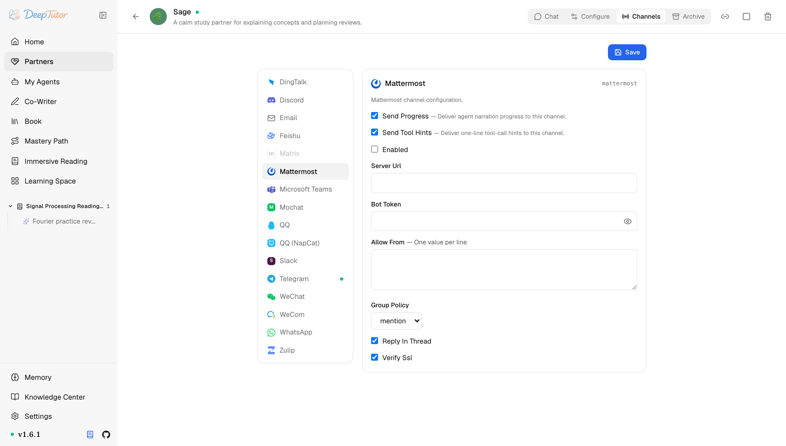

夥伴與管道Mattermost
DeepTutor 接入 Mattermost 教學！1 個 token 全搞定，原生 v4 API 直連自託管伺服器，真香！
為 Partner 設定 Mattermost channel —— bot 帳號 access token、原生 v4 WebSocket + REST、討論串回覆、自託管 TLS。
原文連結：https://docs.deeptutor.info/zh-cn/partners/mattermost/
自己搭了 Mattermost 團隊聊天的朋友有福了，DeepTutor 對它的支援是一等公民級別。
mattermost 管道透過 Mattermost 的原生 v4 API把 AI 學習夥伴（Partner）接到一台自託管的 Mattermost 伺服器上：事件走 WebSocket（/api/v4/websocket），傳送走 REST（一種標準網路介面風格，/api/v4）。
DeepTutor 直接實現了 Mattermost 協定（不依賴 mattermostdriver，底層和 Discord 一樣是 httpx + websockets），所以自託管部署得到的是一等公民整合，而不是借道 Mattermost 的 Slack 相容層。
更有意思的是，一個 bot access token（存取權杖）就授權了全部操作，不像 Slack 還要再管一個連線用的 token。Mattermost 原生支援 Markdown，回覆不需要任何格式轉換；卡片上也沒有 Streaming 開關，回覆以完整訊息送達，過程解說（narration）在 Send Progress 開啟時單獨投遞。

Partner 執行起來之後，先看卡片的即時狀態：它應該從 Connecting 進入 Connected；只有失敗狀態需要更多細節時，再去查日誌。
一、安裝依賴
Mattermost 管道隨 Partners 可選元件（extras）一起安裝；它的傳輸基於 httpx 和 websockets，已經包含在內，沒有額外的開發工具包（SDK）要裝：
pip install -e ".[partners]"
# 或发布包支持 partners extras 时：
pip install "deeptutor[partners]"二、建立 bot 帳號
- 以 Mattermost System Admin 身份啟用 bot 帳號： System Console -> Integrations -> Bot Accounts -> Enable Bot Account Creation 設為 true 。
- 開啟 Integrations -> Bot Accounts -> Add Bot Account 。填一個使用者名稱（顯示名和描述可選），點 Create 。
- Mattermost 只會顯示一次 bot 的 access token，當場複製下來，這就是 Bot Token。但是問題來了：丟了的話只能給這個 bot 重新生成 token，不要拿個人 token 湊數。
- 把 bot 加進它要服務的 team 和 channel：在頻道裡
/invite @你的bot，或從頻道成員面板新增。bot 只能收到自己已加入的頻道的訊息。 - 收集 Allow From 要用的 id：每個傳送者的 Mattermost user id 可以在 System Console 使用者列表裡看到（partner 日誌在首條訊息時也會列印出來）。使用者名稱用於
@mention識別，但 Allow From 匹配的是 user id。
三、設定管道卡片（channel card）
開啟 Partners -> 你的 partner -> Channels -> Mattermost。
| 欄位 | 怎麼填 |
|---|---|
| Send Progress | 測試時建議開啟。長任務會即時投遞過程解說。 |
| Send Tool Hints | 除錯時建議開啟；不想讓使用者看到一行工具呼叫就關掉。 |
| Enabled | 準備啟動管道時再開啟。 |
| Server Url | 你的 Mattermost 基礎 URL，例如 https://mattermost.example.com 。scheme 可省略（預設 https ），WebSocket URL 會自動推導出來——不要在後面加 /api/v4 。 |
| Bot Token | Integrations -> Bot Accounts 裡 bot 帳號的 access token。按金鑰儲存，儲存後會遮罩顯示。 |
| Allow From | 一行一個值。開放測試 bot 可填 * ，正式用填 Mattermost user id。空列表拒絕所有人。 |
| Group Policy | mention （預設）：頻道裡只有被 @ 時才答。 open ：已加入的頻道裡每條訊息都答。私聊永遠會回覆。 |
| Reply In Thread | 開（預設）：bot 在以觸發 post 為根的討論串裡回覆。討論串後續訊息仍會先經過 Group Policy ；預設 mention 策略下，每條後續訊息都要 @ bot。關：回覆直接發到頻道。 |
| Verify Ssl | 開（預設）。僅當自託管伺服器用的是自簽憑證或內部 CA 簽發的憑證時才關掉。 |
超過 Mattermost 單條上限（約 16k 字元）的回覆會自動拆成多條訊息；支援最大 50 MB 的檔案附件。
四、儲存之後
- 點 Save ，再把 Enabled 開啟。
- 啟動 partner（已經在跑的話重新啟動它，或在 Channels 面板用 reload）。
- 用允許的帳號私聊 bot，或在 bot 已加入的頻道裡 @ 它。
- 看 partner 日誌：應該能看到 bot 身份解析（
@你的bot）、WebSocket 連線、入站 post 和回覆投遞。 - 在日誌裡確認 sender id 之後，把 Allow From 裡的
*換成真實 id。
如何確認健康
- 日誌顯示
Mattermost bot identity: @你的bot和Mattermost WebSocket connected，沒有反覆重連。 - bot 帳號在你的 Mattermost team 裡顯示為活躍。
- 允許的帳號私聊能收到回覆，在已加入的頻道裡 @ 它也能收到（預設 Group Policy =
mention）。
常見問題
WebSocket 連不上，或 token 被拒
管道在連線前會呼叫 /api/v4/users/me 驗證 Bot Token，所以壞 token 會很快報錯。這裡回傳 401 說明 token 錯了或被吊銷，去 Integrations -> Bot Accounts 重新生成一個。另外確認 Server Url 是基礎伺服器 URL、後面不帶 /api/v4（這個路徑會自動補上）。
自託管伺服器上的 TLS / 憑證錯誤
自簽章或內部 CA 的憑證過不了驗證。要麼把 CA 裝到 DeepTutor 主機上，要麼把這個管道的 Verify Ssl 關掉，在受信任的私有網路裡可以接受。
bot 在頻道裡不回覆，私聊正常
查兩個地方：
- Group Policy =
mention時，訊息必須真的 @ 到 bot，而且 bot 必須是該頻道成員（/invite @你的bot）。 - Allow From —— 空列表拒絕所有人。先用
*測試，再換成真實的 Mattermost user id。
回覆落到討論串裡、沒 @ 的後續訊息被忽略
Reply In Thread 只決定 bot 把回答發到哪裡，不會繞過提及過濾。Group Policy = mention 時，討論串裡的每條後續訊息仍要 @ bot；如果希望已加入頻道的所有訊息都可觸發回覆，把策略改成 open。只有想走扁平頻道回覆時，才需要關閉 Reply In Thread。
相關頁面
- Channel Matrix —— 所有 channel 一覽
- Slack —— Mattermost 原生 API 所替代的團隊聊天 channel
- Discord —— 同樣的直連 WebSocket + REST 傳輸
部署過程遇到問題，歡迎在留言區留言，把報錯的完整日誌貼出來，我看到會回覆。